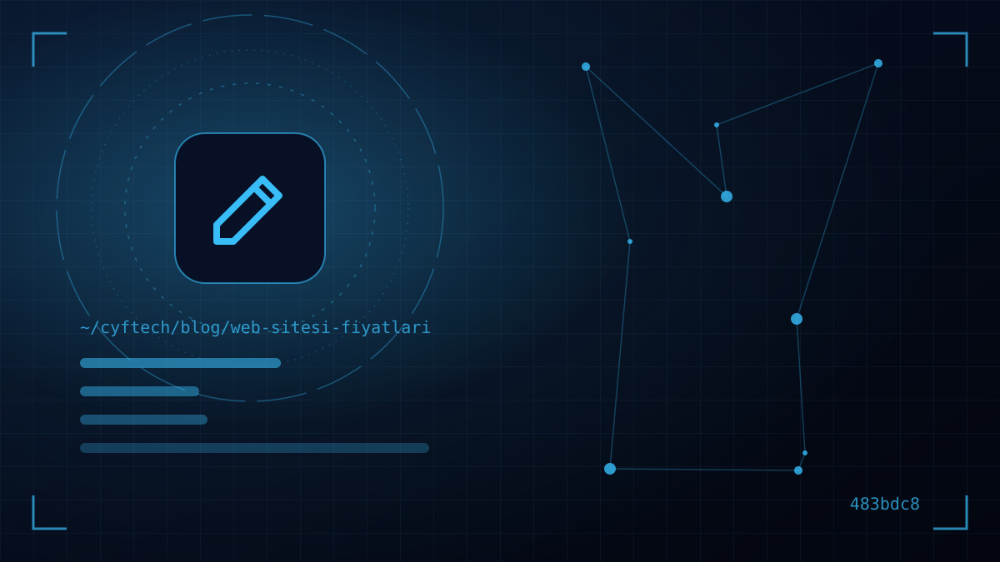

لا توجد إجابة واحدة لسؤال “كم يكلّف موقع ويب؟”: فرؤية فرق يصل إلى عشرة أضعاف بين عرضين طُلبا بالموجز نفسه أمر عادي اليوم. والمسألة الحقيقية ليست اختيار أرخص عرض أو أغلاه، بل معرفة ما الذي تدفع مقابله.
في هذا المقال نفصّل البنود التي تشكّل أسعار مواقع الويب واحدًا تلو الآخر: نطاقات الأسعار التقريبية في السوق حسب نوع الموقع اعتبارًا من 2026، والعوامل التسعة التي ترفع السعر أو تخفضه، والنفقات التي ستستمر في دفعها كل عام بعد السنة الأولى، والتكاليف الخفية التي لا تُذكر في العروض غالبًا.
هدفنا ليس أن نقدم لك “قائمة أسعار”؛ بل أن تتمكن من طرح الأسئلة الصحيحة عند الحديث مع الوكالات أو المستقلين أو معنا، وأن تقيّم العروض مقارنةً للمثل بالمثل.
لماذا تختلف أسعار مواقع الويب إلى هذا الحد؟
موقع الويب ليس منتجًا جاهزًا على الرف، بل حزمة خدمات. فعندما يُقال “موقع شركة” يفهم أحدهم وضع شعارك ونصوصك في قالب جاهز، ويفهم آخر تصميم واجهة خاصة بعلامتك، وكتابة المحتوى، وبنية SEO، وتحسين السرعة، وصيانة لمدة عام. كلاهما يسلّم “موقعًا”، لكن العمل الناتج والجهد المبذول والنتيجة على المدى الطويل مختلفة تمامًا.
لفارق السعر ثلاثة مصادر رئيسية:
- النطاق: عدد الصفحات، وعدد اللغات، والوحدات الخاصة، والتكاملات.
- الطريقة: قالب جاهز، أو تخصيص على بنية جاهزة، أو برمجيات مخصصة من الصفر.
- الفريق والعملية: عمل شخص واحد في عطلة نهاية الأسبوع لا يكلّف ما تكلّفه عملية فريق تتضمن مراحل التصميم والبرمجة والمحتوى والاختبار.
كما انعكست تكاليف تراخيص البرمجيات المرتبطة بالعملات الأجنبية والخوادم والموظفين مباشرة على الأسعار في الانتقال من 2025 إلى 2026. لذلك فإن قوائم الأسعار القديمة التي تراها على الإنترنت ليست محدّثة في الغالب.
أسعار مواقع الويب التقريبية حسب نوع الموقع (2026)
النطاقات التالية نطاقات تقريبية جُمعت من أدلة الأسعار المنشورة في تركيا ومن العروض في السوق اعتبارًا من 2026. وهي ليست أسعارًا نهائية، بل نقطة انطلاق لتخطيط الميزانية؛ وتُحتسب ضريبة القيمة المضافة واسم النطاق والاستضافة عادةً بشكل منفصل.
| نوع الموقع | النطاق المعتاد | النطاق التقريبي (2026) |
|---|---|---|
| صفحة واحدة / صفحة تعريفية | صفحة طويلة واحدة، ونموذج تواصل، وSEO أساسي | 10,000 – 30,000 TL |
| موقع شركة (قالب جاهز) | 5–10 صفحات، وتخصيص القالب، ولوحة إدارة | 15,000 – 50,000 TL |
| موقع شركة (تصميم مخصص) | واجهة خاصة بالعلامة التجارية، وتعدد اللغات، ومدونة، وبنية SEO | 50,000 – 150,000 TL فأكثر |
| موقع تجارة إلكترونية | كتالوج منتجات، ونقاط بيع افتراضية، وشحن، وتكامل الفوترة | اشتراك شهري في الحزم الجاهزة؛ ويبدأ من 100,000 TL في المشاريع المخصصة |
| برمجيات ويب مخصصة / بوابة | عضوية، ولوحات حسب الأدوار، وإجراءات عمل، وAPI | من 200,000 TL إلى الملايين حسب النطاق |
ولأن عناوين إضافية مثل تسجيل ETBİS (نظام تسجيل التجارة الإلكترونية) وعقد البيع عن بُعد ونقاط البيع الافتراضية تدخل في جانب التجارة الإلكترونية، فقد تناولنا هذا الموضوع بشكل منفصل في دليلنا لإنشاء موقع تجارة إلكترونية.
9 عوامل تحدد تكلفة موقع الويب
عند مراجعة عرض ما، ستريد أن ترى ما يقابل كل بند من البنود التسعة التالية. فهي التي تحدد السعر فعليًا:
- 1. مقاربة التصميم — قالب جاهز أم واجهة خاصة بعلامتك؟ التصميم المخصص، مع المخططات الأولية وجولات التعديل، من أكبر بنود المشروع.
- 2. البنية التحتية — نظام إدارة محتوى جاهز مثل WordPress أم برمجيات مخصصة؟ وقد قارنّا مزايا هذا القرار وعيوبه WordPress أم برمجيات مخصصة في مقالنا.
- 3. حجم الصفحات والمحتوى — هناك فرق كبير في الجهد بين موقع تعريفي من 5 صفحات وموقع فيه 50 صفحة خدمات ومدونة وأرشيف مراجع.
- 4. عدد اللغات — كل لغة جديدة تعني ترجمة، وتخطيطًا من اليمين إلى اليسار (للعربية)، ووسوم SEO لكل لغة، واختبارًا.
- 5. الوحدات الخاصة — الميزات مثل نظام المواعيد وحاسبة العروض ودخول الوكلاء ولوحة الأعضاء تُسعَّر كلٌّ على حدة.
- 6. التكاملات — الربط مع ERP أو المحاسبة أو CRM أو الفوترة الإلكترونية أو الشحن أو الرسائل القصيرة أو أنظمة الدفع يستغرق غالبًا وقتًا أطول من التصميم.
- 7. بنية SEO والأداء — بنية عناوين نظيفة، وترميزات schema، وخريطة الموقع، وتحسين الصور، والتوافق مع Core Web Vitals.
- 8. إنتاج المحتوى — كتابة النصوص والتصوير الاحترافي والفيديو ومجموعات الأيقونات لا تكون عادةً مشمولة في السعر.
- 9. الصيانة والدعم — حزمة دعم شهرية أو سنوية للتحديثات والنسخ الاحتياطي ومتابعة الأمان والتعديلات الصغيرة.
قارن النطاق لا السعر؛ فالعرضان اللذان لا يتطابق نطاقهما هما في الحقيقة سعران لمنتجين مختلفين.
ثلاثة سيناريوهات نموذجية: كم يجب أن تخصص كل منشأة؟
لكي لا تبقى الأرقام مجردة، لنلخّص ثلاثة أنماط من المنشآت نصادفها كثيرًا وأين تذهب الميزانية في كل منها. والمبالغ هنا أيضًا تقريبية واعتبارًا من 2026.
مكتب استشارات حديث الافتتاح
الهدف: بث الثقة وتسهيل التواصل عبر الهاتف أو WhatsApp. موقع من خمس صفحات، بلغة واحدة، مخصّص على قالب جاهز، يكفي غالبًا. ويذهب الجزء الأكبر من الميزانية إلى تكييف التصميم والنصوص؛ ولا حاجة إلى وحدات خاصة. وعادةً يبقى هذا النمط في الشريحة الدنيا من الجدول.
منتِج يعمل في التصدير
الهدف: جمع طلبات العروض من الخارج. يحتاج إلى ثلاث أو أربع لغات، وكتالوج منتجات، ومنطقة لتنزيل الوثائق التقنية، وعمل SEO مستقل لكل لغة. وهنا يحدد التكلفةَ عددُ اللغات وجودة الترجمة وحجم المحتوى أكثر من التصميم؛ ومن الطبيعي الوصول إلى شريحة التصميم المخصص.
موزّع لديه شبكة وكلاء
الهدف: أن يرى الوكلاء معلومات الطلبات والمخزون عبر الموقع. لم يعد هذا موقع ويب تقليديًا، بل بوابة وكلاء تتواصل مع ERP. وتحدد الميزانيةَ التكاملاتُ وأدوار المستخدمين والأمان؛ فيندرج ضمن فئة برمجيات الويب المخصصة ويحتاج إلى تخطيط مرحلي.
كما ترى، يمكن لكلمة “موقع ويب” نفسها أن تصف ثلاثة منتجات مختلفة. لذلك فإن تحديد النمط الأقرب إليك قبل طلب العروض هو أقصر طريق لتفسير الأسعار الواردة.
النفقات السنوية لموقع الويب: ماذا تدفع بعد السنة الأولى؟
رغم أن موقع الويب يبدو نفقة لمرة واحدة، فإن له بنودًا تتكرر كل عام. وعند تخطيط الميزانية، من الأسلم النظر إلى التكلفة الإجمالية لثلاث سنوات لا إلى تكلفة الإنشاء وحدها.
| البند | ما فائدته؟ | ملاحظة |
|---|---|---|
| اسم النطاق (.com، .com.tr) | عنوان موقعك | يُجدَّد كل عام؛ وتُسجَّل امتدادات .tr عبر TRABİS |
| الاستضافة (hosting) | الخادم الذي يعمل عليه الموقع | مشتركة أو VPS أو سحابية؛ وتختلف حسب الحركة والبرمجيات |
| شهادة SSL | HTTPS والقفل في شريط العنوان | مجانية في معظم خدمات الاستضافة؛ والشهادات المؤسسية مدفوعة |
| التراخيص | قالب مميز، وإضافات، وخطوط، وبرنامج تجارة إلكترونية | كثير منها يُجدَّد سنويًا ومرتبط بالعملات الأجنبية |
| الصيانة والدعم | تحديثات، ونسخ احتياطي، وأمان، وتعديلات صغيرة | حزمة شهرية ثابتة أو أجر بالساعة |
| البريد الإلكتروني المؤسسي | عناوين بصيغة name@yourcompany.com.tr | تُحتسب رسومها شهريًا لكل مستخدم |
أما كيفية اختيار اسم النطاق والاستضافة، والوثائق المطلوبة لـ .com.tr، وما يجب الانتباه إليه اختيار اسم النطاق والاستضافة بالتفصيل.
التكاليف الخفية غير المذكورة في العرض
تتجاوز المشاريع ميزانيتها في الغالب بسبب البنود التي لم يتحدث عنها أحد في البداية. قبل توقيع العرض، وضّح على من تقع البنود التالية:
- النصوص والترجمة: هل ستُعدّ المحتوى أنت أم الوكالة؟ هل الترجمة احترافية أم آلية؟
- الصور: تراخيص الصور الجاهزة، أو تصوير المنتجات، أو صور المكتب.
- حد التعديلات: كم جولة تعديل على التصميم مشمولة؟ وكيف يُحتسب ما بعدها؟
- النصوص القانونية: نص الإفصاح وفق KVKK، وسياسة ملفات تعريف الارتباط، وعقد البيع عن بُعد.
- ترحيل البيانات: نقل المحتوى والمنتجات من الموقع القديم وتوجيه العناوين القديمة (301). فإن لم يُجرَ التوجيه قد تضيع حركة البحث المكتسبة على مدى سنوات.
- التدريب: من سيعلّم فريقك استخدام لوحة الإدارة؟
تبدو هذه البنود صغيرة منفردة، لكنها مجتمعة قد تبلغ جزءًا مهمًا من تكلفة الإنشاء. ومناقشتها منذ البداية تمنع مفاجآت الميزانية وتأخر الجدول الزمني معًا.
الطريقة الصحيحة لمقارنة عروض مواقع الويب
إن كانت لديك ثلاثة عروض مختلفة، فحوّلها جميعًا أولًا إلى صيغة واحدة. افتح جدولًا بسيطًا واكتب لكل عرض إجابات هذه الأسئلة:
- الخطوة 1 — ما الصفحات والوحدات المشمولة في النطاق؟ هل هي مكتوبة على شكل قائمة؟
- الخطوة 2 — هل التصميم مخصص أم قالب جاهز؟ وباسم من ترخيص القالب؟
- الخطوة 3 — هل العرض على الجوال والسرعة وأعمال SEO الأساسية مشمولة، وكيف ستُقاس؟
- الخطوة 4 — لمن ستعود ملكية الشيفرة المصدرية واسم النطاق والاستضافة؟
- الخطوة 5 — كم شهرًا من الدعم المجاني بعد الإطلاق، وكم التكلفة بعدها؟
- الخطوة 6 — هل الجدول الزمني للتسليم وخطة الدفع مرتبطان بالمراحل؟
النظر إلى الأعمال السابقة للشركة لا يقل أهمية عن السعر. افتح المواقع الحية على الهاتف، وجرّب سرعتها، وتحدث إن أمكن مع أحد عملائها. يمكنك الاطلاع على أعمالنا ومنتجاتنا الخاصة في مراجعنا.
أما الأسئلة الاستراتيجية التي يجب أن تجيب عنها قبل إنشاء الموقع فقد في دليلنا لمواقع الشركات جمعناها.
خفض تكلفة موقع الويب دون التنازل عن الجودة
إن كانت الميزانية محدودة، فالأصوب تحديد الأولويات بدلًا من فعل القليل من كل شيء. وهذه المقاربة التي نوصي بها الشركات الصغيرة والمتوسطة التي تأتينا:
- تقدّم على مراحل: في الإصدار الأول الصفحات الأساسية والتواصل؛ أما المدونة واللغة الثانية والوحدات الخاصة فللمراحل التالية.
- جهّز المحتوى مسبقًا: جمع النصوص والشعار والصور قبل المشروع يختصر المدة وبالتالي التكلفة.
- لا تبنِ بنية أكبر من اللازم: لا حاجة إلى بنية سحابية مكلفة لموقع تعريفي يستقبل بضعة آلاف من الزوار شهريًا.
- اختر المستدام لا الرخيص: الموقع الذي لا يُصان ويحتاج إلى إعادة بناء بعد عامين هو الخيار الأغلى على المدى الطويل.
بالنسبة للمنشآت المرشحة للتوسع خصوصًا، فإن اختيار البنية الصحيحة منذ البداية أرخص دائمًا من البدء من الصفر لاحقًا. يمكنك الاطلاع على نطاق خدماتنا في مواقع الشركات والتجارة الإلكترونية وبرمجيات الويب المخصصة حلول الويب في صفحتنا.
- هل الصفحات والوحدات والتكاملات مكتوبة بندًا بندًا؟
- هل من الواضح ما إذا كان التصميم مخصصًا أم قالبًا جاهزًا؟
- هل اسم النطاق والاستضافة والشيفرة المصدرية باسمك؟
- هل أُدرجت رسوم التراخيص والخدمات التي تُجدَّد سنويًا؟
- هل عدد التعديلات وتسعير الأعمال الإضافية واضحان؟
- هل مدة الدعم بعد الإطلاق ونطاقه مكتوبان؟
الأسئلة الشائعة
كم تبلغ تكلفة إنشاء موقع ويب؟
يختلف ذلك حسب النطاق. فاعتبارًا من 2026 يُسعَّر تقريبًا الموقع التعريفي من صفحة واحدة بين 10 و30 ألف TL، وموقع الشركة بقالب جاهز بين 15 و50 ألف TL، وموقع الشركة بتصميم مخصص من 50 ألف TL فأكثر. أما مشاريع التجارة الإلكترونية والبرمجيات المخصصة فتتفاوت في نطاق أوسع بكثير حسب الوحدات والتكاملات.
كم تبلغ النفقات السنوية لموقع الويب؟
بعد الإنشاء تُدفع كل عام رسوم تجديد اسم النطاق، والاستضافة، وتراخيص القوالب والإضافات المميزة إن وُجدت، والبريد الإلكتروني المؤسسي، والصيانة والدعم. وفي موقع شركة صغير تمثل هذه البنود جزءًا صغيرًا من تكلفة الإنشاء؛ أما في مواقع التجارة الإلكترونية وعالية الحركة فتزداد بشكل ملحوظ.
هل إنشاء موقع ويب رخيص قرار منطقي؟
قد يكون كذلك إن كان الهدف مجرد بطاقة تعريف رقمية قصيرة الأمد. لكن العروض المنخفضة جدًا تعني عادةً قالبًا غير مرخّص، أو خادمًا ضعيفًا، أو بنية SEO ناقصة، أو غياب الدعم بعد الإطلاق، وقد تضطر إلى إعادة إنشاء الموقع خلال وقت قصير.
كم يومًا يستغرق تجهيز موقع ويب؟
إن كان المحتوى جاهزًا، يُنجز الموقع ذو الصفحة الواحدة في بضعة أيام، وموقع الشركة عادةً في 3 إلى 6 أسابيع، أما مشاريع التجارة الإلكترونية والبرمجيات المخصصة فتستغرق بضعة أشهر حسب نطاقها. وأكثر أسباب التأخير شيوعًا هو تأخر وصول النصوص والصور.
أيهما أنسب: أدوات إنشاء المواقع الجاهزة أم الوكالة؟
لصفحة تعريفية بسيطة، قد تكون أدوات إنشاء المواقع الجاهزة بداية سريعة ومنخفضة التكلفة. أما إن كانت لديك خطة لتصميم خاص بالعلامة التجارية وأداء SEO وتكامل ونمو، فإن الفريق المحترف يقدّم نتيجة أكثر اقتصادًا على المدى الطويل.
كلمة أخيرة
تتفاوت أسعار مواقع الويب في نطاق واسع حسب النطاق والطريقة والفريق؛ وتظهر الميزانية الصحيحة عندما توضّح احتياجك وتقارن العروض بالمعيار نفسه. واحسب إلى جانب تكلفة الإنشاء النفقات السنوية والدعم بعد الإطلاق.
إن أردت أن نحدد معًا نطاق مشروعك وتحصل على عرض مخصص لك ومفصّل بندًا بندًا تواصل معنا؛ ولنرسم معًا في الاجتماع الأول الخط الفاصل بين ما تحتاج إليه وما لا تحتاج إليه.